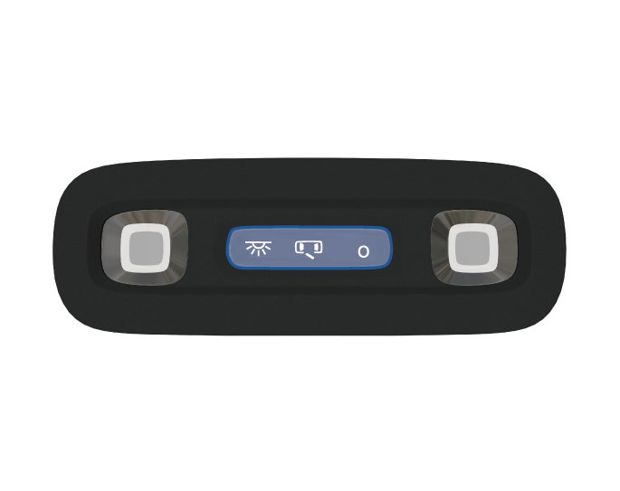

后排照明
后排车顶照明灯*

–
后排车顶照明灯熄灭时，按
端开启后排车顶照明灯，按O端关闭后排车顶照明灯。
–
后排车顶照明灯开关处于平整状态，即
位置时，可以通过打开车门或按压前顶灯开关点亮。
— 页面到底了 —
 端开启后排车顶照明灯，按O端关闭后排车顶照明灯。
端开启后排车顶照明灯，按O端关闭后排车顶照明灯。 位置时，可以通过打开车门或按压前顶灯开关点亮。端开启后排车顶照明灯，按O端关闭后排车顶照明灯。位置时，可以通过打开车门或按压前顶灯开关点亮。
位置时，可以通过打开车门或按压前顶灯开关点亮。端开启后排车顶照明灯，按O端关闭后排车顶照明灯。位置时，可以通过打开车门或按压前顶灯开关点亮。